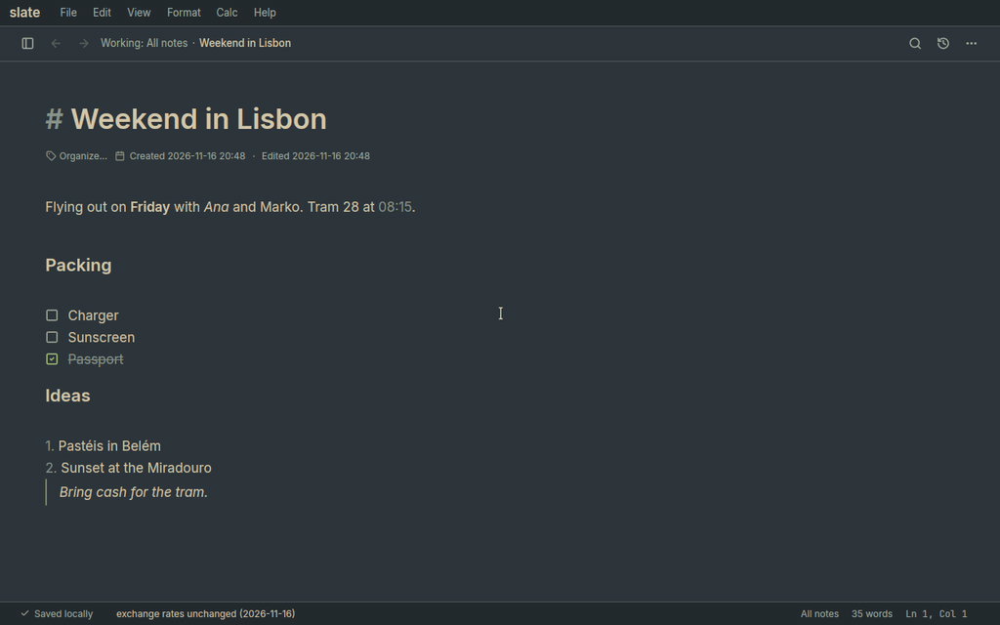
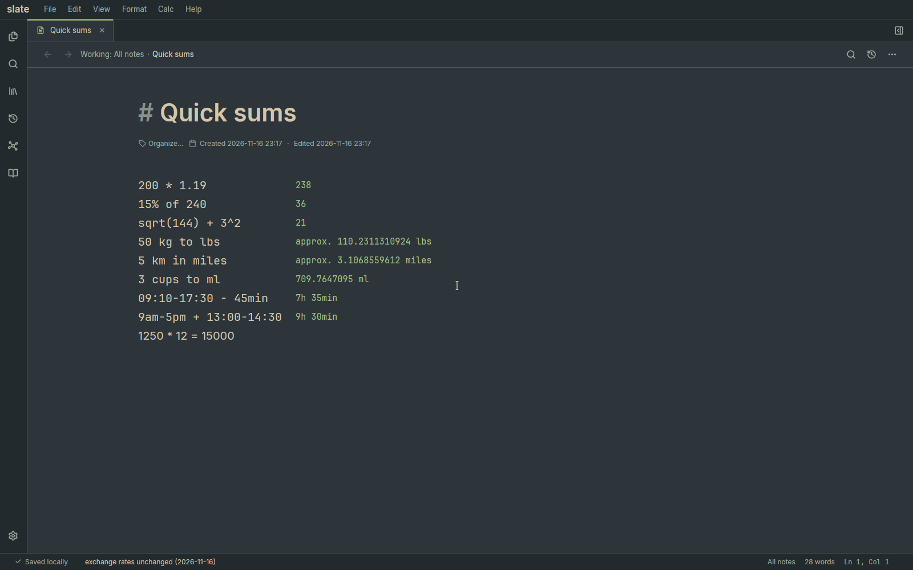
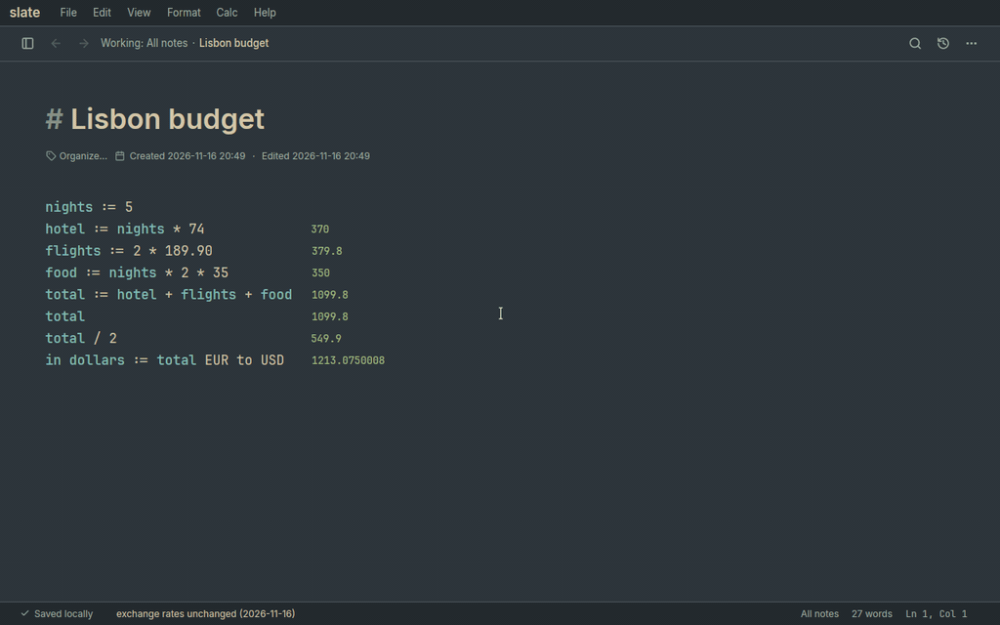
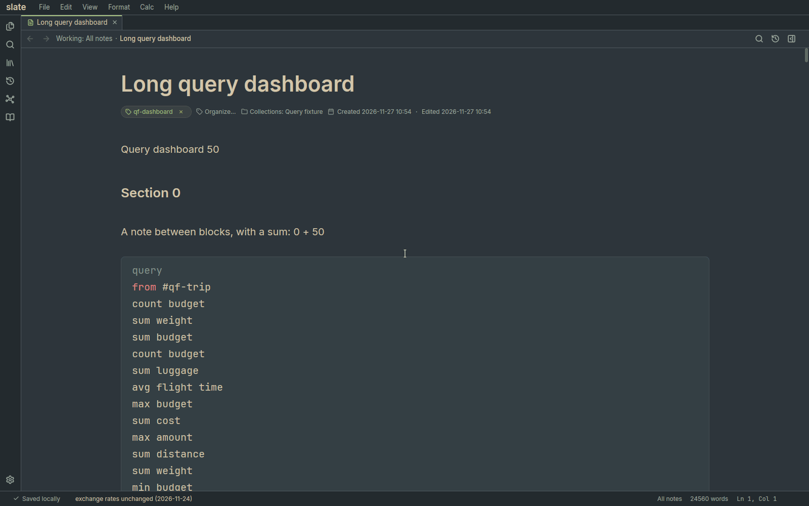

Calculations, variables and currencies¶
Every line in Slate can be a calculator. Type something that adds up and the answer appears, faintly, to the right of the line. Lines that are just text stay quiet.

Calculations¶
200 * 1.19 238
15% of 240 36
sqrt(144) + 3^2 21
50 kg to lbs approx. 110.2311310924 lbs
5 km in miles approx. 3.1068559612 miles
3 cups to ml 709.7647095 ml
Arithmetic, percentages, powers and roots, and conversions between units of
length, weight, volume, time, data and many more all work; the engine is
fend. Calculations also work inside list
items, checklist items and table cells. Lines that look like dates
(2026-09-29) are left alone.
Keep the answer. Press Tab at the end of a line to write its result
into the note (1250 * 12 becomes 1250 * 12 = 15000).
Add things up. :sum and :avg total or average the numbers in the
selection (or the whole note), insert the result and copy it.
Clock times¶
Slate understands times of day and durations, so timesheets add up:
09:10-17:30 - 45min 7h 35min
9am-5pm + 13:00-14:30 9h 30min
11:45 - 09:10 2h 35min
09:10 + 2h 30min 11:40
22:00-02:00 4h
(17:00 - 09:00) / 3 2h 40min
10:30-11:00 standup 30min
A range is two times joined by - without spaces, and runs past midnight
when it needs to. Words after a calculation are a label.
Currencies¶
Convert between currencies the same way you convert units:

100 USD to EUR approx. 90.6621601529 EUR
$10 + 5 EUR $15.51498
2000 RSD to EUR approx. 17.0045908229 EUR
45 GBP in JPY approx. 9503.2658993133 JPY
Rates come from a small script you point Slate at. The repository includes one that fetches about 160 daily rates from open.er-api.com:
The last argument is your base currency. Slate keeps the last rates on disk,
so conversions work offline and right from startup; it fetches fresh rates
once in the background when it starts, and again on :currency refresh. The
status bar says when the rates were updated. Any program that prints rates
in the same JSON shape works; see Currency rates.
Variables¶
Give a value a name with := and use the name anywhere in the note:


nights := 3
hotel := nights * 74 222
flights := 2 * 189.90 379.8
food := nights * 2 * 35 210
total := hotel + flights + food 811.8
total / 2 405.9
in dollars := total EUR to USD 895.41…
Change nights to 5 and every line that depends on it updates at once.
- Names are not case-sensitive and may contain spaces (
in dollars). - If a name is assigned twice, the last assignment wins.
- After three letters (
[editor] variable_autocomplete_min_chars), Slate suggests matching names;TaborEnteraccepts. - A variable keeps its unit or currency:
budget := 2000 RSD to EURholds euros, sobudget * 2is in euros too, andweight := 120 kgstays a mass. Adding a bare number to it (weight + 5) has no answer; writeweight + 5 kg. - Variable names are highlighted; in vim mode
gdon a name jumps to where it is defined. - Variables can hold clock times and durations too:
start := 09:10,lunch := 12:00-12:45, then17:30 - start - lunch.
Variables from other notes¶
A note can use a variable defined in another note: a link to the note, a
dot, and the variable's name. Type [[, pick the note (Slate writes its id
into the link and shows its title), press Esc to skip choosing a heading,
then type .: Slate lists that note's variables.


The other note doesn't need to be open. When its variables change, notes that
use them pick up the new values. Ctrl+] follows the link to the source note
and Alt+Left comes back. Away from the cursor the link reads
Lisbon budget.total; because it stores the id, renaming the note never
breaks it.
Where a result comes from¶
Put the cursor on a line with a result and press K in vim mode, run
:inspect, or choose Calc → Inspect result in the desktop app. A panel
shows what the result was computed from:
total := hours * rate + [[Lisbon trip]].travel = 4298.7148860085 EUR
hours 48 line 4
rate 85 EUR line 3
travel 240 USD Lisbon trip
1 EUR = 1.0973 USD · rates of 2026-11-27
- Each variable the line reads, with its value and where it is defined: a
line of this note, or another note. A plain value such as
x := 5, which shows no result of its own, shows its definition instead. - When more than one currency is involved, the exchange rates used and the date they were published.
Enter(or a click in the desktop app) jumps to the selected definition, opening the other note when it is there;Esccloses.- On a link,
Kpreviews the linked note instead. - The panel shows one level: inspect an input's own line to see what that line reads.
Totals across notes¶
A query block adds up a variable over every note a search finds. Give each
trip note a budget, tag them #trip, and total them in one place:


Answers appear beside each line, and the from line says how many notes were
read (4 notes). Like other calculation results they are never written into
the note.
Writing a block¶
A block is a fenced code block with the language query. A note can hold
any number of them. Each line is one statement:
| Line | Shows |
|---|---|
from <search> |
Which notes are read: 12 notes |
sum budget |
The total of budget over those notes |
avg budget |
The average, over the notes that have a budget |
min budget, max budget |
The smallest and largest value, as written in its note |
count |
How many notes the search found |
count budget |
How many of them have a budget |
// a comment |
Nothing; blank lines are fine too |
fromcomes first, once per block. It takes the same search as the note switcher: tags, collections,title:,contains:,AND,OR,-and parentheses, for examplefrom (#trip OR #weekend) AND coll:"2026" -#cancelled. Plain words are not accepted, since they match titles loosely; writetitle:lisboninstead.- Variable names work as in the note: case does not matter and spaces are
allowed (
avg nights out).
Which values are read¶
Each note found contributes its variables as that note works them out, including values it reads from other notes; if a name is assigned twice, the last assignment counts. Notes without the variable are skipped, and when no note has it the line says so.
- Units, currencies and durations are kept. Values of the same kind convert:
budgets in EUR, USD and CHF add up in the currency of the first note that
has one, and
120 kgplus30000 gis150 kg. - Values of different kinds, such as kilograms and euros, or a number
without a unit next to one with, show
values have incompatible unitsinstead of a partial total. minandmaxcompare values after converting them, but show the winner as its note writes it, so the smallest of1 kgand300 greads300 g.- Results are shown to 10 decimal places, like other calculations.
When answers update¶
- Answers are worked out in the background, one block at a time, so typing never waits for them. Only blocks on screen are worked out; scrolling to another block works it out then.
- After you edit a block, its answers return once you stop typing for a
moment. They follow other notes too: when a note it reads changes, in
either app, through another program or a sync, and when exchange rates are
refreshed. The previous answer stays on screen until the new one is ready.
When the change is known to touch values the block reads, such as new
exchange rates or an edit in another open note, its
fromline addsrefreshingmeanwhile. - Exports, PDFs and copied text show the block as written, without answers.
What is left out¶
- The note holding the block is never counted, even if it matches.
- Encrypted notes are never read, even while unlocked. When the search only
looks at tags, collections and titles, the
fromline counts the ones it skipped (12 notes, 2 protected skipped); acontains:search cannot look inside them, so it saysprotected notes not searched. - Markdown files opened by path (
slate notes.md) are not searched; a block inside one still totals the notes in Slate. - A block reads at most 5,000 notes, the oldest first; past that the
fromline saysfirst 5,000 of 8,200 notes. - Answers cannot be used in calculations, variables or other blocks.
- Blocks need the
mathandcross_notefeatures on in the note holding them (see below); otherwise thefromline says so.
Problems¶
A line that cannot be answered shows why, beside it:
| Message | Meaning |
|---|---|
add a from line to choose notes |
The block has no from line (shown on the opening fence) |
from must come first |
A statement comes before from |
only one from line |
A second from in the same block |
unknown statement 'total'; … |
The line is not one of the statements above |
sum needs a variable name |
sum, avg, min or max without a name |
search: … |
The search cannot be read, with the reason |
bare words match titles loosely; use title: or # |
The search has plain words |
no matching note exports budget |
No note found has that variable |
values have incompatible units |
The values cannot be added or compared |
Turning features off per note¶
Each note can switch calculation features on and off: :module status shows
them, and :module math off (or table, variables, cross_note, style)
switches one. Defaults for new notes are under [editor.modules] in the
config.
The full rules are in the variables specification.